扉页
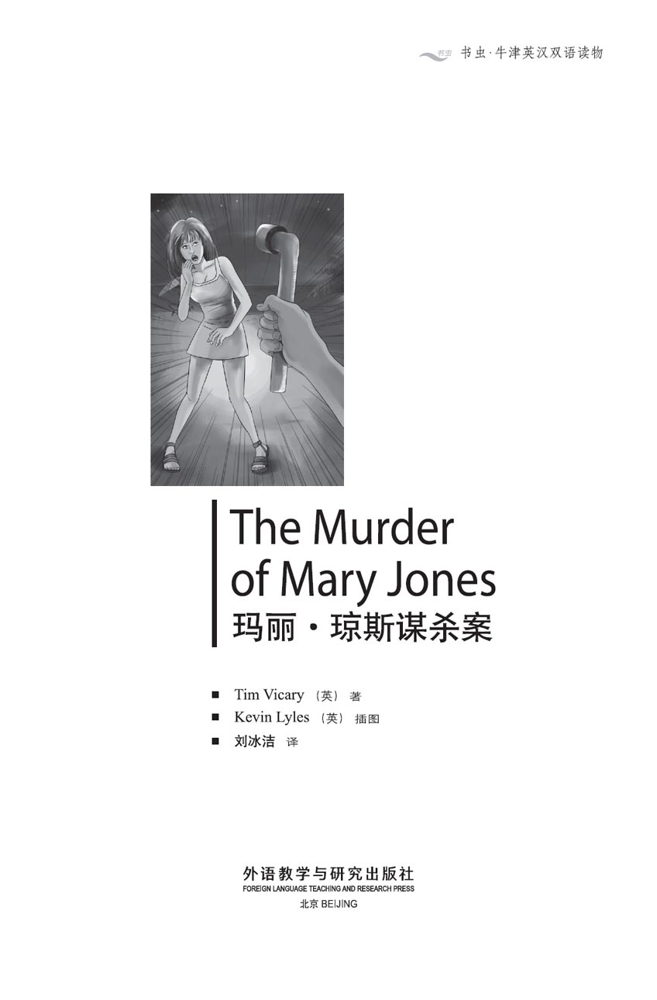
版权页
京权图字：01-2013-7792
Published by arrangement with Oxford University Press for sale in the People's Republic of China only and not for export therefrom. This edition is for sale in the mainland of China only, excluding Hong Kong SAR, Macao SAR and Taiwan.
© Oxford University Press 2008
Oxford is a registered trademark of Oxford University Press
图书在版编目（CIP）数据
玛丽·琼斯谋杀案：英汉对照 ／（英）维卡里（Vicary, T.）著；（英）莱尔斯（Lyles, K.）绘；刘冰洁译．— 北京：外语教学与研究出版社，2013.12
（书虫·牛津英汉双语读物）
书名原文：The murder of Mary Jones
ISBN 978-7-5135-3932-6
Ⅰ．①玛… Ⅱ．①维… ②莱… ③刘… Ⅲ．①英语－汉语－对照读物②话剧剧本－英国－现代 Ⅳ．①H319.4：I
中国版本图书馆CIP数据核字（2013）第309216号
出版人 蔡剑峰
责任编辑 谷 丰
执行编辑 姚 蕾
封面设计 蔡 颖
出版发行 外语教学与研究出版社
社 址 北京市西三环北路19号（100089）
网 址 http://www.fltrp.com
版 次 2014年1月第1版
书 号 ISBN 978-7-5135-3932-6
制售盗版必究 举报查实奖励
版权保护举报电话：（010）88817519
内容简介
内容简介
夏日里，在一个英国的度假小镇上。一具年轻女子的尸体躺在沙滩上。谁杀了她？是那晚在迪斯科舞厅遇见她并和她跳舞的那两个年轻人西蒙和丹吗？他们有时会偷车，可他们是杀人犯吗？
那晚在迪斯科舞厅到底发生了什么？有目击者说当时有人打架。玛丽走的时候是谁跟着她？她是一个人吗？那玛丽的男朋友吉姆呢？他真的爱她吗？或许他有点儿嫉妒和生气……
法庭需要找到所有这些问题的答案，因为谋杀是重罪，杀人犯往往要被终身监禁。
THE MURDER OF MARY JONES
THE MURDER OF MARY JONES
It is summer time in an English holiday town. A young girl lies dead on the beach. Who killed her? Was it Simon and Dan, the two young men who met her, and danced with her, at the disco that night? They sometimes steal cars, but are they guilty of murder?
What really happened that night at the disco? There are witnesses who say that there was a fight. Who followed Mary when she left? Was she alone? And what about Mary's boyfriend, Jim? Did he really love her? Perhaps he was a little jealous, and angry...
The court needs to find answers to all these questions, because murder is a very serious crime, and murderers are often sent to prison for life.
目录
The Murder of Mary Jones
The Murder of Mary Jones
INTRODUCTION
This is a court in England. The people in the court are trying to answer a question - did Simon Clark and Dan Smith kill Mary Jones, or not? It is a very important question, because in Britain, murderers usually go to prison for life. You can see a picture of the court here. Simon and Dan are there, with two policemen, the judge, the clerk of the court, two lawyers, and the twelve people in the jury. Witnesses come to the witness box, and the lawyers and the judge ask them questions. The jury do not say anything, but they listen carefully. At the end, they must answer the question - are Simon and Dan guilty of murder, or not guilty?
There are two possible endings to the play, Scene 4 (Alternative 1) and Scene 4 (Alternative 2). Read and discuss them, and decide which you like best.
PERFORMANCE NOTES
Scenes 1 to 4: The courtroom
At the back of the room is the judge's table and chair. In front of this there is a chair and table for the clerk of the court. On the left of the judge's table is a chair for the witnesses (the witness box). In front of the clerk's table is a table with two chairs for the lawyers. Behind this table there are four more chairs for Simon, Dan, and two policemen. On the judge's left there are twelve chairs for the jury. There are more chairs in the room for people to sit and watch.
CHARACTERS IN THE PLAY
The judge
The clerk of the court
Ms Helen Wills, the police lawyer
Simon Clark, a young man
Dan Smith, a young man, Simon's friend
Mr David Carter, Simon's and Dan's lawyer
Jim Wilson, Mary Jones's boyfriend
PC Norton, a policeman
Dr Seldon, a doctor
PC Moran, a policeman
WPC Gray, a policewoman
Mrs lucy Symes
Janet Nolan, a young woman
Mrs Jones, Mary's mother
The jury (twelve people)
SCENE 1
How did Mary die?
The jury, the lawyers, and the clerk of the court come in and sit down. Then Simon Clark and Dan Smith come in with the two policemen. The judge comes in and everyone stands up. The judge walks to his chair, looks at everybody slowly, and then sits down. The people and the lawyers sit down. Simon and Dan, the two policemen, and the clerk are standing up.
CLERK
Simon Clark, you are here because of the murder of Mary Jones. Did you kill her, or not?
SIMON
No, sir. I didn't.
CLERK
And you, Dan Smith? Did you kill Mary Jones?
DAN
No, sir. I didn't. I'm not guilty!
SIMON
We didn't kill her!
CLERK
All right. Sit down. (They sit.)
MS WILLS
(Standing up) My lord, I am Helen Wills, the lawyer for the police. David Carter is the lawyer for Simon Clark and Dan Smith.
JUDGE
Very good. Please begin, Ms Wills.
MS WILLS
Thank you, my lord. Members of the jury, look at the photo, please. There is a girl in the photo with a young man. She is Mary Jones, and he is Jim Wilson, Mary's boyfriend. (The jury look at the photo.)
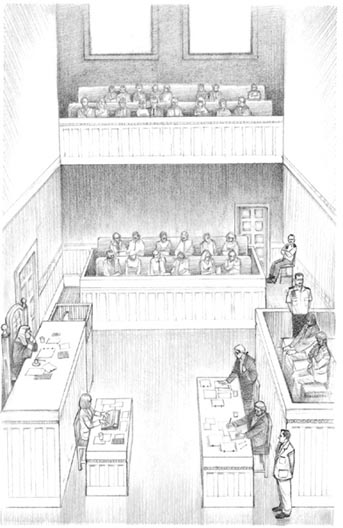
The courtroom.
JUDGE
Ms Wills, I haven't got that photo.
CLERK
Oh, I'm sorry, my lord. Here you are.
He gives the judge a photo.
JUDGE
Thank you. Please go on, Ms Wills.
MS WILLS
On 12 August, Mary was in a disco in Trenton with Jim. At midnight, she started to walk home along the road by the sea, and someone killed her. Now, please look at the second photo.
JUDGE
Excuse me, Ms Wills. (He holds up a photo.) This photo? The photo of a dead girl?
MS WILLS
Yes, my lord, that's right. I'm sorry, it isn't a very nice photo. But that is Mary Jones, too. There is blood on her head and face.
JUDGE
Yes, I see. Did someone find her there, that night?
MS WILLS
Yes, my lord. Jim Wilson found her body on the beach near the road at about half past twelve. He tried to help her, but he couldn't. Mary Jones was dead.
JUDGE
How did she die, Ms Wills?
MS WILLS
She died because someone hit her four times on the head with a spanner, my lord. Clerk, can I have the spanner, please?
CLERK
Yes, here you are. (He gives her a spanner.)
MS WILLS
Thank you. It was this spanner, members of the jury. Look at it carefully. This spanner has Mary's blood and hair on it. Can you see that?
She shows the spanner to the jury.
JUDGE
Can I see that, please, Ms Wills?
MS WILLS
Yes, of course, my lord. (She gives it to him.)
JUDGE
Thank you. But who hit her with the spanner, Ms Wills? That's the important question, you know. Who killed her?
MS WILLS
Who killed her? It was Simon Clark and Dan Smith, I think.
JUDGE
Why do you think that? Tell the jury, please.
MS WILLS
Yes, my lord. They were in the disco that evening. They went there in a car, a white Ford Fiesta. It wasn't their car - they stole it. They often steal cars.
JUDGE
I see. And how long were they there?
MS WILLS
They were in the disco for two hours. At about ten o'clock, Dan danced with Mary Jones. After that, Simon Clark danced with her.
JUDGE
Excuse me, Ms Wills. Did Jim see this?
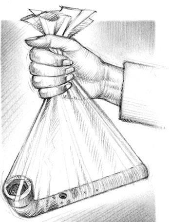
'This spanner has Mary's blood and hair on it.'
MS WILLS
Yes, my lord, he did. He was very angry, and he hit Simon. Then he talked to Mary for half an hour, and after that Mary started to walk home alone.
JUDGE
And Jim stayed in the disco?
MS WILLS
Yes, my lord, he did. But Dan and Simon didn't. They went out, ten minutes after Mary. They drove away in the Fiesta.
JUDGE
Yes. But did anyone see them kill her? That's important.
MS WILLS
No, no one saw them kill her. But the police found the tyre marks of a Ford Fiesta near Mary's body. And later, they found Dan and Simon in a white Ford Fiesta in Bilsford.
JUDGE
Where is Bilsford, Ms Wills?
MS WILLS
Ten kilometres from Trenton, my lord. And in the car there was a spanner. This spanner, members of the jury! With Mary's blood and hair on it! (She shows the spanner to the jury.)
JUDGE
I see. That's very important. (He writes.)
MS WILLS
Yes, my lord. These two boys followed Mary from the disco in the white Fiesta. They stopped the car, hit her on the head with this spanner, and drove away.
DAN
(Standing up) It's not true! We didn't follow her! We didn't go down that road! It's not true!
JUDGE
Be quiet, young man! Sit down! You can talk later!
MS WILLS
I call my first witness, PC Norton.
PC Norton goes to the witness box.
CLERK
(Giving him a book) Take this book in your right hand and read what it says.
NORTON
I promise to tell the truth, the whole truth, and nothing but the truth.
MS WILLS
PC Norton, what happened on 12 August?
NORTON
Well, at 12.47 a.m. someone telephoned the police and I went to the road by the beach in Trenton. I found a young woman's body there, and a young man. His name was Jim Wilson.
MS WILLS
I see. Did Jim call the police?
NORTON
Yes, he did. He was Mary's boyfriend, I think. He tried to help her, but she was dead.
MS WILLS
Where was the body?
NORTON
It was on the beach near the road. There were some tyre marks in the sand near the body. A car stopped there, and then went back towards Trenton, I think.
MS WILLS
Thank you. Wait there, please, and answer Mr Carter's questions. (She sits.)
GARTER
(Standing up) PC Norton, tell me some more about this boyfriend, Jim Wilson. He tried to help the dead girl, you say. Did he have blood on his shirt and trousers?
NORTON
Yes, sir, he did. There was blood on his face and hands and on his shirt and trousers too.
GARTER
Did you ask him about this?
NORTON
Yes, sir. The blood was there because he tried to help her, he said. He sat in my car and started to cry. He loved her, he said.
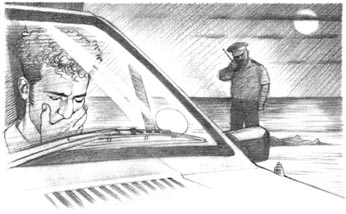
'He sat in my car and started to cry.'
GARTER
I see. But why was Jim on the beach?
NORTON
He went for a walk after the disco, he said.
GARTER
I see. Thank you very much.
(He sits down.)
JUDGE
PC Norton, one more question. Were there any cuts on Jim's face or hands?
NORTON
I don't know, sir. There was blood on his face and hands, but it was Mary Jones's blood, I think.
JUDGE
Thank you. That's all. The next witness is Dr Seldon, I think. (Dr Seldon comes in, and the clerk gives him the book.)
SELDON
I promise to tell the truth, the whole truth, and nothing but the truth.
MS WILLS
Dr Seldon, you looked at Mary Jones's body. What did you find?
SELDON
Mary Jones was a young woman of about 18. She died because somebody hit her four times on the head.
MS WILLS
Thank you. You looked at this spanner very carefully, too. Can you tell us about that, please?
SELDON
Yes. I looked at the spanner and I found blood and hair on it. The blood and hair were Mary Jones's.
MS WILLS
Are you sure about that?
SELDON
Yes. They were the same.
MS WILLS
So did somebody kill her with this spanner?
SELDON
Oh yes. I am sure about that.
MS WILLS
Thank you. Wait there, please.
Ms Wills sits down, and Carter gets up.
GARTER
Dr Seldon, I want to ask you about Mary Jones's hands. Was there any blood on them?
SELDON
Yes, sir, a lot of blood. I looked at it very carefully and it was her blood. Perhaps she put her hands on her head when the spanner hit her.
GARTER
But was there blood under her fingernails, too?
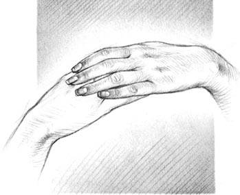
A little blood under her fingernails.
SELDON
Yes, a little.
GARTER
Did you look carefully at that blood, too?
SELDON
No, I didn't. There was a lot of blood on her hands and it was all her blood. I am sure about that.
GARTER
Yes, but think carefully, doctor. What did Mary do when the man hit her? Did she try to hit him, too? Perhaps she cut his face with her fingernails. Do girls sometimes do that?
SELDON
Well, yes, sometimes.
GARTER
So perhaps the man's blood was under her fingernails. Did you look for that?
SELDON
There wasn't much blood under her fingernails.
GARTER
But did you look at it, doctor? Did you look carefully at the blood under her fingernails?
SELDON
No. I'm sorry, I didn't.
GARTER
I see. But there was some blood under her fingernails. You're sure about that?
SELDON
Yes, there was a little blood there. Not much.
Carter sits down. Seldon goes out. PC Moran comes in, and takes the book from the clerk.
MORAN
I promise to tell the truth, the whole truth, and nothing but the truth.
MS WILLS
PC Moran, you looked at the white Ford Fiesta, I think. What did you find?
MORAN
Well, first I put some paper under each tyre, and drove the car over it. The tyres made marks on the paper. Then I took the paper to the beach, and looked at the tyre marks in the sand.
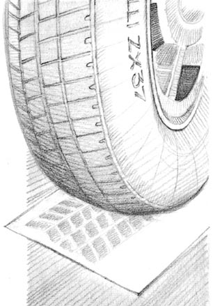
'I put some paper under each tyre, and drove the car over it.'
MS WILLS
Were they different?
MORAN
No, they weren't. The marks on the beach were from Pirelli ZX37 tyres, and the marks on the paper were from Pirelli ZX37 tyres, too.
MS WILLS
Did you find any more things in the car?
MORAN
Yes. There was a lot of sand from the beach.
MS WILLS
I see. That's very interesting. Thank you very much. Wait there, please. (She sits down.)
GARTER
(Standing up) PC Moran, do all Ford Fiestas have Pirelli ZX37 tyres?
MORAN
No. Ford Fiestas can have lots of different tyres.
GARTER
And what about Volkswagen Polos? Do they sometimes have Pirelli ZX37 tyres, too?
MORAN
Sometimes, yes, sir.
GARTER
I see. So there are lots of cars with these tyres. Some are Ford Fiestas, but some are Volkswagen Polos. Is that true?
MORAN
That's true, yes.
GARTER
So perhaps a Polo made these marks in the sand?
MORAN
Perhaps, yes.
GARTER
Thank you. Now, there was a lot of sand in the car. Was there any blood in the car too, or hair?
MORAN
No, there wasn't.
GARTER
What? No hair or blood? Did you look?
MORAN
Yes, sir, we did. But we didn't find anything.
GARTER
But Ms Wills said, 'These young men killed Mary Jones.' There was blood on Mary's head and face, blood on her dress, blood on her hands. But there was no blood in the car, you say?
MORAN
No, sir, no blood or hair in the car.
GARTER
I see. Thank you, PC Moran. That's very interesting.
(He sits down.)
Moran goes out, and WPC Gray comes in.
GRAY
(Taking the book) I promise to tell the truth, the whole truth, and nothing but the truth.
MS WILLS
WPC Gray, you found Simon Clark and Dan Smith in the white Ford Fiesta. What happened?
GRAY
Well, at ten o'clock that night, a woman called Mrs Symes telephoned the police. 'I can't find my car,' she said. It was a white Ford Fiesta, number M346 WXT.
MS WILLS
Did you look for the car?
GRAY
Yes. At two o'clock in the morning, we found it in Bilsford. Simon Clark and Dan Smith were in the car, so we asked them a lot of questions.
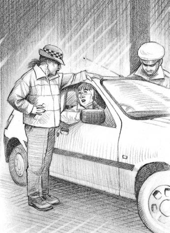
'We asked them a lot of questions.'
MS WILLS
What did they say?
GRAY
They stole the car at eight o'clock, they said. Then they went to a disco in Trenton, and stayed there until about midnight.
MS WILLS
And what did you find in the car?
GRAY
A spanner, and a lot of sand. There was sand in the young men's shoes, too.
MS WILLS
What did they say about the spanner?
GRAY
Nothing. They said, 'Spanner? What spanner?'
MS WILLS
Why was there sand in their shoes? Did you ask them?
GRAY
Yes. They went for a walk on the beach, they said.
MS WILLS
Did you see any blood on these young men?
GRAY
Yes, I did. There was blood on Simon Clark's face. He had two small cuts under his left eye.
MS WILLS
Did you ask him about this?
GRAY
Yes. He said, 'A man in a disco hit me. His hand cut me.'
MS WILLS
I see. Thank you very much. Wait there, please.
(She sits down, and Carter stands up.)
GARTER
I have only two questions, WPC Gray. Did you find any blood on the young men's shoes?
GRAY
No, sir. There was a lot of sand, but no blood.
GARTER
Was there any blood on their shirts or trousers? Blood from these cuts on Simon's face, perhaps?
GRAY
No sir, there wasn't. They were very small cuts.
GARTER
Thank you. (He sits down.)
scene n. a part of a play during which there is no change in time or place （戏剧中的）一场
jury n. twelve people in court who decide if someone is guilty or not 陪审团
lawyer n. a person who knows a lot about the law 律师
clerk n. an official in charge of the records of a court, town council etc（法庭、地方政府等负责管理文书的）书记员
court n. a building or room where all the information concerning a crime is given so that it can be judged 法院；法庭
murder n. the crime of deliberately killing someone 谋杀
guilty adj. having done something that is a crime 犯了罪的，有罪的
boyfriend n. a special friend for a girl or boy 男朋友
disco n. a place to listen to music, meet people and dance 迪斯科舞厅
midnight n. 12 o'clock at night 子夜；午夜
spanner n. a metal tool that fits over a nut, used for turning the nut to make it tight or to undo it 扳手，扳子
show v. to help someone to see something 拿……给（某人）看；出示
steal v. to take things that belong to other people without their agreement 偷；窃取
dance v. to move your arms and legs when you listen to music 跳舞
alone adv. not with any other people 单独地，独自地
tyre n. a thick rubber ring that fits around the wheel of a car, bicycle etc 轮胎
mark n. a visible line or spot, left on a surface 痕迹
follow v. to go behind someone 跟着，跟随
PC n. a PC is a male police officer of the lowest rank. PC is an abbreviation for "police constable". 英国最低级别的男性警察
witness n. someone who sees something happen 目击者；证人
telephone v. to speak to someone by telephone （给……）打电话
beach n. a sandy place near the sea 海滩
I promise to tell the truth, the whole truth, and nothing but the truth what every witness must say in court, so that we know they are going to tell the truth （证人在法庭上的誓词）我保证如实供述，毫无隐瞒。
cut n. a break in the skin, where blood comes out 伤口
sure adj. feeling that you know something very well 肯定的，确定的
fingernail n. the hard flat part that covers the top end of your finger 手指甲
cut v. to break the skin with something sharp 划破，划伤
SCENE 2
Jim's story
Jim Wilson goes to the witness box.
CLERK
(Giving Jim the book) Take this book in your right hand and read from it.
JIM
I promise to tell the truth, the whole truth, and nothing but the truth.
MS WILLS
(Standing up) Jim, tell me about Mary. Did you know her well?
JIM
Very well. She was my girlfriend. Our families come to Trenton for a holiday at the same time every year.
MS WILLS
I see. Can you tell us about the night of Saturday 12 August, please?
JIM
Well, I went to the disco with Mary at half past eight. We sat at a table and talked to our friends. Then we danced - talked - danced - and then Mary went home.
MS WILLS
What time did she go home?
JIM
At about - midnight, I think. I don't remember.
MS WILLS
Did you see any new people at the disco?
JIM
Yes. Two young men. They danced with Mary.
MS WILLS
Can you see those two young men here now?
JIM
Yes. Those two there. They killed her! (He looks angrily at Simon Clark and Dan Smith.)
DAN
(Standing) We didn't kill her! That's not true!
JUDGE
Please, Mr Smith. Sit down!
Dan sits down slowly.
MS WILLS
I'm sorry about that. Now Jim, tell me, what did you do when Mary went out of the disco?
JIM
Well, I stayed for fifteen minutes, to talk to some friends. Then I went for a walk, and - I saw her. There was blood on her face. I tried to help her, but I couldn't.
MS WILLS
So what did you do then?
JIM
I ran to phone the police. But it was no good. She was dead - and they killed her!
He looks at Dan and Simon. Ms Wills sits down.
'They killed her!'
GARTER
(Standing up) Jim, did you love Mary?
JIM
Yes, I think so - she was my girlfriend.
GARTER
Yes, she was your girlfriend. And you loved her - you think. Mary left the disco at midnight, you say. She walked along that dark road by the sea. You didn't go with her. Why?
JIM
Why? I don't know - she wanted to go alone.
GARTER
Why? Was she angry with you?
JIM
I don't know. A little angry, perhaps. It wasn't important.
GARTER
Were you angry with these young men? With Simon and Dan, because they danced with her?
JIM
A little angry, yes.
GARTER
A little angry, you say. Did you see them dance with her?
JIM
I saw Simon dance with her, but not Dan. I went out with some friends. They wanted to see my car.
GARTER
To see your car? Why? Is it very interesting?
JIM
It's a new car - a Volkswagen Polo. I like it very much. My friends wanted to look at it.
GARTER
I see. What happened when you went back in?
JIM
I saw Mary with that boy. (He looks at Simon.)
GARTER
And what did you do then?
JIM
I was angry. I asked him to stop dancing with her.
GARTER
You asked him, you say. Did you hit him, Jim?
JiM
Well, yes. I hit him once. But he hit me first!
SIMON
That's not true! I didn't hit you! You hit me!
JUDGE
Be quiet, Mr Clark! Please!
SIMON
But it's not true, my lord! I didn't hit him!
JUDGE
Perhaps not. But you can speak later. Do you understand?
SIMON
Yes, sir.
GARTER
What did Mary do when you hit Simon, Jim?
JIM
She laughed, I think. Then she sat at a table with me.
GARTER
Why did she laugh, Jim? Did she laugh at Simon, or you?
JIM
She laughed at Simon, because he was afraid of me!
GARTER
Is that true? Or did she laugh at you, Jim? Perhaps she liked Simon, not you!
JIM
Of course she didn't! She was my girl, and she was there with me, not them!
GARTER
But you were angry with Mary, Jim. Why was that? Did she like them more than you, perhaps?
JIM
NO! I wasn't angry with her, I was angry with Simon!
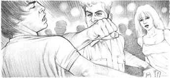
I was angry, so I hit him.
GARTER
Are you sure?
JIM
Yes, of course! I was angry with him because he danced with my girlfriend, and because he killed her. Don't you understand? He killed her! Of course I'm angry - he killed her!
GARTER
How do you know that, Jim?
JIM
Everyone knows that! He followed her in his car along the road. Then he took that spanner from the car, and he hit her on the head - two, three times! Then she ran on to the beach, crying.
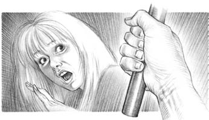
'He hit her on the head.'
GARTER
What happened then, Jim?
JIM
He hit her again! And then she stopped moving, and there was blood everywhere! Lots of blood! And I tried to help her, but I couldn't, she was dead -
Jim is crying. Carter says nothing for a minute.
GARTER
So, Jim, she ran on to the beach, crying, and he hit her again, you say. How do you know that?
JIM
How? I don't remember. The police said that.
GARTER
No, Jim, they didn't say that. (He waits, but Jim says nothing.) Jim, there was no blood on Simon or Dan, but there was a lot of blood on you. And you were angry with Mary, because she didn't love you. Is that true, Jim?
JIM
No.
GARTER
Simon and Dan weren't on the beach, Jim. They didn't kill her. But you were there. You went out of the disco and followed her. Did you kill her?
JIM
NO! Of course I didn't! What are you saying? They killed her - their car was there, the spanner was in their car! I didn't kill her! She was my girlfriend - I loved her!
GARTER
You loved her, you say. But you didn't walk home with her on that dark night, Jim. Why not?
JIM
But I did! I went after her! And I found her on the beach! She was dead!
GARTER
Did you go in your car? Your new Polo?
JIM
No, I didn't. I walked. I wanted to think.
GARTER
What did you want to think about?
JIM
About me and Mary. I was sorry - I loved her, you know - And I wanted to talk to her, of course. But she was dead! They killed her, she was dead!
GARTER
But there was no blood on them, or in their car, Jim. The blood was on you! Perhaps you loved Mary, but you killed her too - because you were angry with her!
JIM
No! Of course I didn't! I didn't kill her. I loved her!
GARTER
One more question, Jim. Do you have Pirelli tyres on your Volkswagen Polo?
JIM
What? Er - no. No, I don't. I have Goodyear tyres.
GARTER
All right. I have no more questions. (He sits.) Jim goes out, and Ms Wills stands up.
MS WILLS
My lord, I have no more witnesses.
JUDGE
Thank you. Mr Carter, have you any witnesses?
GARTER
Yes, my lord. Mrs lucy Symes, please.
Lucy Symes comes into the witness box.
SYMES
(Taking the book) I promise to tell the truth, the whole truth, and nothing but the truth.
GARTER
Mrs Symes, do you have a white Ford Fiesta?
SYMES
Yes, sir.
GARTER
What is the car's number?
SYMES
M346 WXT.
GARTER
And what happened to that car on 12 August?
SYMES
Somebody stole it, sir. I telephoned the police, and they found it next day. There was a lot of sand in it.
'I telephoned the police.'
GARTER
I see. Now, Mrs Symes, do you have a spanner in your car, like this spanner on the table?
SYMES
Well, I don't know, sir. You see, I did have a spanner like that in the car last year, but it wasn't very good. So now I have a better one than that.
GARTER
I see. And where is this new spanner now?
SYMES
In the back of my car, sir. It's always there.
GARTER
What about the old spanner? Where is that?
SYMES
Well, I don't know, sir. I didn't want it, you see.
GARTER
Was it in the car on 12 August?
SYMES
I don't know. Perhaps it was, but I'm not sure.
GARTER
Thank you, Mrs Symes. Please wait there.
He sits down, and Ms Wills stands up.
MS WILLS
Mrs Symes, was your old spanner in the car, or not?
SYMES
I'm not sure. I'm sorry, I don't know.
MS WILLS
Well, perhaps you put the spanner in the back of your car, and then you forgot about it.
SYMES
Yes, perhaps I did.
MS WILLS
Yes. (She takes the spanner from the table and gives it to Mrs Symes.) And is this spanner like your old car spanner?
SYMES
I think so, yes. Yes, it is.
MS WILLS
Thank you. (She sits down.)
Mrs Symes leaves. Janet Nolan comes to the witness box, and takes the book from the clerk.
JANET
I promise to tell the truth, the whole truth, and nothing but the truth.
GARTER
Miss Nolan, you were in the disco on the night of 12 August. Did you see Mary Jones?
JANET
Yes, I saw her with her boyfriend, Jim. And then later she danced with those two boys.
GARTER
Which two boys?
JANET
Those two. (She looks at Simon and Dan.)
GARTER
I see. Did she dance with them for a long time?
JANET
For about ten minutes, yes. She danced with Dan first and then Simon. Jim wasn't in the disco then. When Jim saw them, he was very angry.
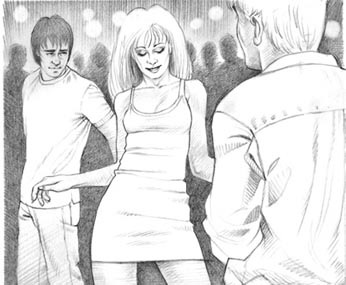
'She danced with Dan first and then Simon.'
GARTER
What did he do?
JANET
He hit Simon.
GARTER
And what did Simon do?
JANET
Nothing. He didn't hit Jim. He walked away.
GARTER
I see. And was Jim angry with Mary, too?
JANET
Yes. Mary laughed at Jim, so Jim was very angry.
GARTER
Mary laughed at Jim, you say? Not at Simon?
JANET
Yes, that's right.
GARTER
What happened then?
JANET
Well, Jim and Mary talked, then Mary went home.
GARTER
I see. And what did Jim do?
JANET
He sat there for five minutes. Then he went out.
GARTER
What about Simon and Dan? Where were they?
JANET
They stayed in the disco. One of them asked me to dance, but I said no. So after ten minutes he and his friend went out.
GARTER
Now I want to be sure about this. Jim went out first, you say, and these boys went out ten minutes after him. Is that right?
JANET
Er, ye-es, I think so. It's not easy to remember.
GARTER
Thank you.
He sits down and Ms Wills gets up.
MS WILLS
You're right, Miss Nolan. It isn't easy to remember things after six months, of course.
JANET
No, it isn't. But I can remember nearly everything.
MS WILLS
Did you watch Mary and Jim all the time in the disco?
JANET
No, of course not. But—
MS WILLS
No. So be careful, Miss Nolan. Perhaps you are wrong about this. It's a long time ago. Perhaps these boys went out before Jim? Not after him?
JANET
Perhaps. I don't know. I'm not sure.
MS WILLS
Thank you. That's all.
She sits down. Janet begins to go out of the witness box, then she stops.
JANET
No, I'm right! Jim did go out first - I'm sure!
JUDGE
Thank you, Miss Nolan. Thank you very much.
holiday n. a time of rest from work, school etc 假期
no good not useful 没有用处的
once adv. on one occasion only 一次，一回
afraid adj. frightened because you think that you may get hurt or that something bad may happen 害怕的，恐惧的
understand v. to know the meaning of what someone is telling you 懂；理解
nearly adv. almost, but not quite or not completely 几乎，差不多
SCENE 3
Simon and Dan tell their story
Simon Clark comes into the witness box.
SIMON
(Taking the book) I promise to tell the truth, the whole truth, and nothing but the truth.
GARTER
Now, Simon. This is very important. What happened on the night of 12 August? Tell me.
SIMON
All right. Well, I went out with Dan to look for a car. We often take cars, you see—
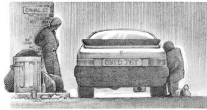
'We often take cars.'
JUDGE
You steal them, do you?
SIMON
Not steal, no. We take them for the night, drive for an hour or two, and leave them somewhere.
JUDGE
I see. Do you do this often?
SIMON
Yeah, why not? We like it. That night we took this white Ford Fiesta, and went to the disco in Trenton. We got there about ten o'clock, I think.
GARTER
Did you meet anyone in the disco?
SIMON
Yes. We danced with some girls. But it wasn't very exciting, so at about midnight we went out and drove away. Two hours later a police car stopped us. That's it.
GARTER
Now I want you to look at this photo of Mary Jones. Did you see her in the disco?
SIMON
Yes. Dan danced with her first, and then I danced with her. Then her boyfriend hit me.
GARTER
Did you hit him first?
SIMON
No, I didn't.
GARTER
Did you hit him after he hit you?
SIMON
No. He was bigger than me. And I never hit people.
GARTER
All right. Did you follow this girl out of the disco?
SIMON
No, I didn't see her go out. Dan and I talked for ten minutes, then we drove away. We didn't see the girl.
GARTER
Did you kill her?
SIMON
No, sir, I didn't.
GARTER
All right. (He sits down. Ms Wills stands up.)
MS WILLS
When Jim hit you, you did nothing. Right?
SIMON
Yes. That's right.
MS WILLS
And what did Mary do? Did she laugh?
SIMON
I'm not sure. Perhaps she did.
MS WILLS
She did, I think. Mary was a beautiful girl, and she laughed because her boyfriend hit you.
SIMON
I wasn't angry. She wasn't important to me.
MS WILLS
Not important? But you danced with her.
SIMON
She was OK. She wasn't very beautiful or interesting.
Mary's mother stands up. She is very angry.
MRS JONES
Don't you say that about my daughter! She was beautiful, and she was a lot better than you! She didn't steal cars or kill people!
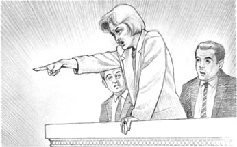
'Don't you say that about my daughter!'
JUDGE
Please sit down, Mrs Jones. (She sits down.)
MS WILLS
You weren't angry, you say. That isn't true, Simon Clark. You were very angry with Mary!
SIMON
No, I wasn't. Why do you say that?
MS WILLS
You were angry with her because she laughed at you. So you and Dan followed her in the Fiesta. What happened then? You asked her to get in. Did she get in?
SIMON
No, she didn't.
MS WILLS
I see. She didn't get in the car, so you were angry again. Then you hit her with this spanner and killed her. Is that right?
SIMON
No. It's not true.
MS WILLS
Yes, it is. You murdered Mary Jones, Simon Clark! You killed her with this spanner!
SIMON
No, I didn't! I'm not guilty, I tell you!
MS WILLS
You are guilty, Simon. You killed Mary Jones.
She sits down. Simon goes out. Dan comes in.
DAN
(Taking the book) I promise to tell the truth, the whole truth, and nothing but the truth.
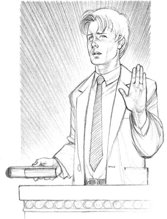
'I promise to tell the truth, the whole truth, and nothing but the truth.'
GARTER
Dan, you listened to Simon. Did he tell the truth?
DAN
Yes, of course he did.
GARTER
Did you see Jim hit your friend in the disco?
DAN
Yes, I did.
GARTER
And after that, did you see Jim go out?
DAN
Yes. The girl, Mary, went out first. Jim went later. We stayed, and went out ten minutes after Jim.
GARTER
And when you went out, did you see Jim or Mary?
DAN
No. We got in the car and drove away.
GARTER
All right, thank you. Wait there.
He sits down, and Ms Wills stands up.
MS WILLS
When Jim hit Simon, did Mary laugh at him?
DAN
Well, yes.
MS WILLS
Mary laughed at Simon?
DAN
Yes.
MS WILLS
So then Simon was angry with Mary, but you were both afraid of Jim. Is that right?
DAN
Well, perhaps, yes.
MS WILLS
Yes. So you waited in the disco. You were angry with Mary. She went out of the disco, and Jim wasn't with her. So you and Simon followed her in the car.
DAN
No, we didn't.
MS WILLS
Oh yes, you did. You stopped the car, and asked her to get in. But she didn't. Perhaps she laughed at you again. Then you were really angry.
DAN
NO! That's not true!
MS WILLS
Oh yes it is, Dan. How did Mary die? I know, and the jury know too. You killed her. But I'm not sure about one thing - who hit Mary first? Was it Simon?
DAN
No—
MS WILLS
It wasn't Simon, you say? Then it was you!
DAN
No, it wasn't! It wasn't me!
MS WILLS
So it was Simon?
DAN
No! It wasn't Simon or me! We didn't do it!
MS WILLS
Do you see this spanner, Dan? It has Mary's blood on it, and Mary's hair. And this spanner was in your car. Tell me, Dan - who put it there? You, or Simon?
DAN
I don't know. I didn't put it there. I didn't see it.
MS WILLS
That isn't true, Dan. The spanner was in your car because you murdered Mary Jones with it. That's true, and everybody knows it.
She sits down. Dan goes out of the witness box. Carter stands up.
GARTER
I have no more witnesses, my lord. (Sits down.)
JUDGE
Now, members of the jury, Ms Wills and Mr Carter are going to talk to you. Listen carefully.
MS WILLS
(Standing up) Members of the jury, the police found this spanner in the Fiesta. It had Mary's blood and hair on it. They found tyre marks near Mary's body. There was blood on Simon's face, and under Mary's fingernails, too.
SIMON
Jim hit me in the disco! He cut my face!
JUDGE
Be quiet! Ms Wills is talking now, not you!
MS WILLS
Look at these two young men. They're angry now. Think about them. They aren't very nice young men. What do they do in the evenings? They steal cars.
DAN
Yes, but we don't kill people!
MS WILLS
You did, this time. You followed Mary, and you killed her. Think about it carefully, members of the jury. Mary is dead, and these young men are guilty of her murder.
She sits down, and Carter stands up.
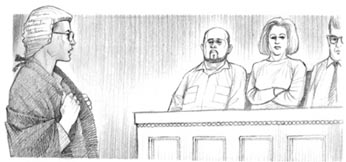
'Members of the jury...'
MRS JONES
(Standing up) That's right. They killed my beautiful daughter!
JUDGE
Please, Mrs Jones. You must sit down. Mr Carter is going to talk now. (She sits down.)
GARTER
Members of the jury, Mary Jones is dead, we know that. But did these two boys murder her? Are you sure about that? There are a lot of questions to answer.
MRS JONES
What questions? They're guilty! We know that!
JUDGE
Mrs Jones, you must sit down, or go out!
She sits down.
GARTER
Think about Janet Nolan. She says, 'Jim went out of the disco first - not Simon.' Think about the spanner. Did it come from Mrs Symes's car? Perhaps, perhaps not.
JIM
What about the tyre marks? The Fiesta had Pirelli tyres!
GARTER
Hundreds of cars have Pirelli tyres, Jim. Volkswagen Polos have them. And you have a Polo, Jim.
JIM
But my car doesn't have Pirelli tyres!
GARTER
Perhaps your car doesn't have Pirelli tyres today, Jim. But in August? Did you have Pirelli tyres then?
JIM
No, of course I didn't.
GARTER
Well, you say that now. But I'm not sure. And here's another question - what about the blood? There was a lot of blood on your shirt and trousers, Jim.
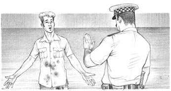
'There was a lot of blood on your shirt and trousers, Jim.'
JIM
Of course there was. I tried to help Mary!
GARTER
But was there any blood on Simon or Dan? No, members of the jury, there wasn't.
JIM
There was blood on Simon's face!
GARTER
Yes, but you hit him, Jim. There was no blood on Dan, or in the car. There was blood on you. And you're a big young man, Jim - you get angry very quickly. Mary was afraid of you.
JIM
That's not true! I loved her!
GARTER
Yes, Jim, but you were angry with her too. And you are angry now, we can see that.
JIM
I'm angry because Mary is dead, and they killed her!
GARTER
Did they, Jim? I'm not sure. Think carefully, members of the jury. Did Jim kill Mary? Perhaps - we don't know. But did Simon and Dan kill her? No. They are not guilty. (Carter sits down.)
JUDGE
Now, members of the jury, there is one big question for you, and you must answer it. Think very carefully. Did these two men kill Mary Jones? Are they guilty or not guilty of her murder?
'Are they guilty or not guilty?'
exciting adj. making you feel excited 令人兴奋的
quickly adv. fast 快速地
SCENE 4
The Verdict (Alternative 1)
The judge, the lawyers, the clerk of the court, and Simon and Dan are all in their places. There are two policemen beside Simon and Dan. The jury come back into the room and sit down. The foreman of the jury stands up. The clerk stands up.
CLERK
Members of the jury, do you have a verdict?
FOREMAN
Yes, we have.
CLERK
And what is your verdict? Guilty, or not guilty?
FOREMAN
Guilty.
DAN
No! No, that's not true. We didn't do it!
CLERK
Be quiet! Simon Clark and Dan Smith, stand up, please!
They stand. Dan looks at Simon.
DAN
What did I tell you, Simon? Why did we go to that disco? Why did you want to follow that girl?
SIMON
I didn't! Be quiet!
JUDGE
Simon Clark and Dan Smith, you murdered Mary Jones - a young, beautiful girl. For this murder, there is only one punishment. You must go to prison for life.
DAN
But we didn't do it! Jim killed her, we didn't!
JIM
No, I didn't! I loved her! You murdered her!
SIMON
That's not true! You murdered her, we didn't!
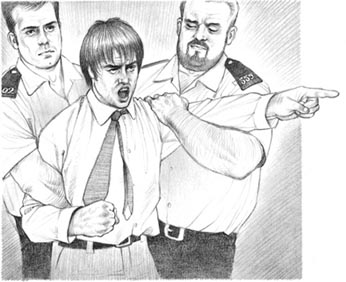
'You murdered her, we didn't!'
JUDGE
Be quiet. Take them away, please.
The police take Simon and Dan out. Mrs Jones stands up.
MRS JONES
Members of the jury, my lord judge, Ms Wills, thank you. Thank you very much.
JUDGE
That's all right, Mrs Jones. I'm very sorry about Mary, but those boys are going to prison now.
JIM
(Takes Mrs Jones's arm.) Yes. Come on, Mrs Jones. It's all right now. (They go out of the court.)
verdict n. what the Jury decides: guilty or not guilty 裁断；裁定
alternative n. something you can choose to do or use instead of something else 可供选择的事物
foreman n. the person who speaks for the jury 陪审团团长
SCENE 4
The Verdict (Alternative 2)
The judge, the lawyers, the clerk of the court, and Simon and Dan are all in their places. There are two policemen beside Simon and Dan. The jury come back into the room and sit down. The foreman of the jury stands up. The clerk stands up.
CLERK
Members of the jury, do you have a verdict?
FOREMAN
Yes, we have.
CLERK
And what is your verdict? Guilty, or not guilty?
FOREMAN
Not guilty.
DAN
Yes!
SIMON
That's right! That's right! We didn't do it!
CLERK
Simon Clark and Dan Smith, stand up, please.
Simon and Dan stand up. Dan looks at the jury.
DAN
(Happily) Thank you, jury! Thank you very much!
JUDGE
Simon Clark and Dan Smith, you are not guilty of the murder of Mary Jones. You are free to go.
MRS JONES
But they killed my daughter! They can't be free!
JUDGE
I'm sorry, Mrs Jones, but they are not guilty.
SIMON
What about Jim? What are you going to do about Jim? He killed her!
JIM
I'm going home now.
He walks to the door. PC Norton walks in front of him. He puts his hand on Jim's arm.
NORTON
Jim Wilson, come with me. I want to talk to you about your girlfriend, Mary Jones.
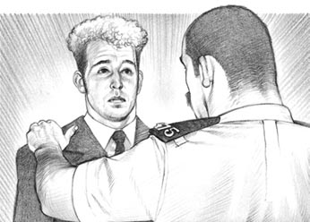
'Jim Wilson, come with me.'
JIM
But she's dead. Those two boys killed her!
NORTON
No, they didn't. They're not guilty. Come with me, please. (Jim and the policeman go out.)
DAN
Come on, Simon. We're free! We're going home.
They go out. Mrs Jones looks at the judge.
MRS JONES
My lord, my daughter is dead. Who killed her?
JUDGE
I'm sorry, Mrs Jones. I don't know.
The judge looks at Ms Wills and Mr Carter. They say nothing. Slowly, Mrs Jones goes out.
punishment n. making people pay, or sending them to prison, for what they have done 惩罚手段；处罚
玛丽·琼斯谋杀案
玛丽·琼斯谋杀案
内容简介
这是英格兰的法庭。法庭上的人都在试图回答一个问题——西蒙·克拉克和丹·史密斯是否杀害了玛丽·琼斯？这是个很重要的问题，因为在英国，杀人犯通常是要被终身监禁的。此处上可以看到法庭的图片。图上有西蒙、丹、两名警员、法官、法庭书记员、两名律师和陪审团的12名成员。证人坐在证人席上，律师和法官向他们提问。陪审团成员不说话，但是他们在仔细聆听。最后，他们必须要给出答案——西蒙和丹是否犯了谋杀罪？
剧本提供了两个可能的结局：第四场（版本1）和第四场（版本2）。阅读并讨论，然后选出你最喜欢的结局。
场景说明
第一至四场：法庭
房间最里面是法官的桌椅。法官的桌椅前面是法庭书记员的桌椅。法官桌子的左边是一把证人坐的椅子（证人席）。书记员的桌子前面是律师的桌子和两把椅子。这张桌子后面是给西蒙、丹和两名警员准备的四把椅子。法官左边摆放着供陪审团成员就座的12把椅子。法庭里还有一些椅子供人们就座旁听。
剧中人物
法官
法庭书记员
海伦·威尔斯女士——警方律师
西蒙·克拉克——一个年轻人
丹·史密斯——一个年轻人，西蒙的朋友
戴维·卡特先生——西蒙和丹的律师
吉姆·威尔逊——玛丽·琼斯的男朋友
诺顿警员——一名警察
塞尔登医生——一名医生
莫兰警员——一名警察
格雷女警员——一名女警察
露西·赛姆斯太太
珍妮特·诺兰——一个年轻女子
琼斯太太——玛丽的母亲
陪审团（12个人）
第一场
玛丽是怎么死的？
陪审团成员、律师们和法庭书记员走进来坐下。然后西蒙·克拉克和丹·史密斯在两名警员的戒护下走了进来。法官走进来，所有人起立。法官走向他的椅子，缓缓地看着每个人，然后坐下。众人和律师坐下。西蒙、丹、两名警员和法庭书记员仍然站着。
书记员：
西蒙·克拉克，你因玛丽·琼斯谋杀案而出庭。你有没有杀她？
西蒙：
没有，先生。我没有。
书记员：
那你呢，丹·史密斯？是你杀了玛丽·琼斯吗？
丹：
没有，先生。我没有。我是清白的！
西蒙：
我们没有杀她！
书记员：
好。坐下。（他们坐下来。）
威尔斯女士：
（站起来）法官大人，我是警方律师海伦·威尔斯。戴维·卡特是西蒙·克拉克和丹·史密斯的律师。
法官：
很好。请开始吧，威尔斯女士。
威尔斯女士：
谢谢您，法官大人。各位陪审团成员，请看这张照片。照片上是一个女孩儿和一个年轻男子。她是玛丽·琼斯，他是玛丽的男朋友吉姆·威尔逊。（陪审团成员看照片。）
法官：
威尔斯女士，我还没拿到那张照片。
书记员：
哦，抱歉，法官大人。给您。
他递给法官一张照片。
法官：
谢谢。请继续，威尔斯女士。
威尔斯女士：
8月12日，玛丽和吉姆在托伦顿的一家迪斯科舞厅里。午夜时，她沿着海边的那条路独自往家走，然后有人杀了她。现在，请看第二张照片。
法官：
打断一下，威尔斯女士。（他举起一张照片。）这张照片？一个死亡女孩儿的照片？
威尔斯女士：
是的，法官大人，没错。抱歉，这张照片不太好。但是这也是玛丽·琼斯。她的头上和脸上都有血。
法官：
是，我清楚了。那晚有人在那儿发现她吗？
威尔斯女士：
有，法官大人，吉姆·威尔逊在大概十二点半的时候在靠路边的沙滩上发现了她的尸体。他想要救她，但是他无能为力。玛丽·琼斯已经死了。
法官：
她是怎么死的，威尔斯女士？
威尔斯女士：
有人用扳手击打了她头部四次，法官大人。书记员，我可以拿一下那个扳手吗？
书记员：
可以，给你。（他递给她一个扳手。）
威尔斯女士：
谢谢。就是这个扳手，各位陪审团成员。请仔细看。这个扳手上沾有玛丽的血和头发。能看到吗？
她把扳手展示给陪审团看。
法官：
我能看看吗，威尔斯女士？
威尔斯女士：
当然可以，法官大人。（她把扳手递给他。）
法官：
谢谢。但是是谁用这个扳手打了她呢，威尔斯女士？这是关键问题，你知道。谁杀了她？
威尔斯女士：
谁杀了她？我认为是西蒙·克拉克和丹·史密斯。
法官：
你为什么这么认为？请给陪审团讲一讲。
威尔斯女士：
好的，法官大人。他们那晚在那家迪斯科舞厅。他们是开车去的，开了一辆白色的福特嘉年华。那不是他们的车——是他们偷来的。他们经常偷车。
法官：
我明白了。他们在那儿待了多久？
威尔斯女士：
他们在迪斯科舞厅待了两个小时。差不多十点的时候，丹和玛丽·琼斯跳了舞。之后，西蒙·克拉克又和她跳了舞。
法官：
打断一下，威尔斯女士。吉姆看到这些了吗？
威尔斯女士：
是的，法官大人，他看到了。他非常生气，还打了西蒙。然后他和玛丽谈了半个小时，之后玛丽就一个人往家走了。
法官：
那吉姆还留在迪斯科舞厅里？
威尔斯女士：
是的，法官大人，他留下来了。但是丹和西蒙没有。他们出去了，就在玛丽走后十分钟。他们开着那辆嘉年华走了。
法官：
好的。可是有人看见他们杀了她吗？这很重要。
威尔斯女士：
没有，没人看到他们杀了她。但是警察在玛丽尸体旁发现了一辆福特嘉年华车的轮胎印。并且后来他们在比尔斯福德发现了在白色嘉年华车里的丹和西蒙。
法官：
比尔斯福德在哪儿，威尔斯女士？
威尔斯女士：
离托伦顿有十公里，法官大人。并且车上有个扳手。就是这个扳手，陪审团的各位！上面沾着玛丽的血和头发！（她把扳手展示给陪审团看。）
法官：
我明白了。这非常重要。（他记录着。）
威尔斯女士：
是的，法官大人。这两个男孩儿从迪斯科舞厅出来后就开着白色嘉年华尾随玛丽。他们停下车，用这个扳手打她的头，然后开车离开。
丹：
（站起来）这不是真的！我们没有尾随她！我们没走那条路！这不是真的！
法官：
安静，年轻人！坐下！你可以稍后再说！
威尔斯女士：
我要请出我的第一位证人，诺顿警员。
诺顿警员走向证人席。
书记员：
（递给他一本书）右手拿书，读出上面的话。
诺顿：
我保证如实供述，毫无隐瞒。
威尔斯女士：
诺顿警员，8月12日发生了什么事？
诺顿：
嗯，午夜12点47分的时候有人打电话报了警，然后我赶到了托伦顿沙滩旁的那条路上。我发现沙滩那儿有一具年轻女子的尸体，还有一个小伙子。他叫吉姆·威尔逊。
威尔斯女士：
我明白了。是吉姆报的警吗？
诺顿：
是的，是他。我想他是玛丽的男朋友。他想要救她，但是她已经死了。
威尔斯女士：
尸体在哪儿？
诺顿：
在靠路边的沙滩上。尸体附近的沙子上有轮胎印。我想应该是有辆车在那儿停了一下，然后又开回托伦顿了。
威尔斯女士：
谢谢。请稍等一下，然后回答卡特先生的问题。（她坐下来。）
卡特：
（站起来）诺顿警员，再跟我说说玛丽的男朋友吉姆·威尔逊。你说他想救这个死去的女孩儿。那他的衬衫和裤子上沾上血了吗？
诺顿：
是的，先生，沾上了。他的脸上、手上沾上血了，衬衫和裤子上也沾到血了。
卡特：
你问他有关这些血的事了吗？
诺顿：
问了，先生。他说因为想要救她才沾上血的。他坐在我车里哭了起来。他说他爱她。
卡特：
我明白了。但是吉姆为什么在沙滩上呢？
诺顿：
他说他从迪斯科舞厅出来后去散步。
卡特：
我明白了。非常感谢。（他坐下来。）
法官：
诺顿警员，还有个问题。吉姆的脸上或手上有没有伤口？
诺顿：
我不知道，先生。他脸上和手上都有血，但是我想那是玛丽·琼斯的血。
法官：
谢谢。没有问题了。我想下一位证人是塞尔登医生吧。（塞尔登医生走进来，书记员把那本书递给他。）
塞尔登：
我保证如实供述，毫无隐瞒。
威尔斯女士：
塞尔登医生，你检查过玛丽·琼斯的尸体。你有什么发现吗？
塞尔登：
玛丽·琼斯是个大概18岁的年轻女子。有人击打她的头部四次导致她死亡。
威尔斯女士：
谢谢。你也非常仔细地检查过这个扳手。能给我们说一说吗？
塞尔登：
可以。我检查过扳手，发现上面有血和头发。血和头发都是玛丽·琼斯的。
威尔斯女士：
你确定吗？
塞尔登：
确定。是一样的。
威尔斯女士：
所以说有人用这个扳手杀了她？
塞尔登：
嗯，是的。我很确定。
威尔斯女士：
谢谢。请稍等。
威尔斯女士坐下来，卡特站起来。
卡特：
塞尔登医生，我想问问玛丽·琼斯的手。她的手上有血吗？
塞尔登：
有的，先生，有很多血。我检查得很仔细，是她的血。可能扳手打到她的时候她用手捂着头。
卡特：
但是她的指甲缝里也有血吗？
塞尔登：
是的，有一点儿。
卡特：
你也仔细检验了那儿的血吗？
塞尔登：
不，我没有。她手上有很多血，都是她的血。这点我敢肯定。
卡特：
好的，但是仔细想想，医生。那个人打她的时候，玛丽·琼斯做了什么？她也想要打他吗？或许她用指甲划破了他的脸？女孩儿有时会这么做吗？
塞尔登：
嗯，是的，有时会。
卡特：
所以她指甲缝里有可能留有凶手的血。你检查了吗？
塞尔登：
她的指甲缝里没多少血。
卡特：
但是你有没有检查，医生？你仔细检查她指甲缝里的血了吗？
塞尔登：
没有。抱歉，我没检查。
卡特：
我明白了。但是她指甲缝里是有血的。这点你能肯定吗？
塞尔登：
是的，有一点儿血。不多。
卡特坐下来。塞尔登走出去。莫兰警员走进来，从书记员手里接过那本书。
莫兰：
我保证如实供述，毫无隐瞒。
威尔斯女士：
莫兰警员，我想你检查过那辆白色福特嘉年华。你有什么发现？
莫兰：
嗯，我先是在每个轮胎下面放了些纸，然后开车碾过去。轮胎印就留在纸上了。然后我把纸拿到沙滩那儿，检查了沙滩上的轮胎印。
威尔斯女士：
它们有什么不同吗？
莫兰：
没有，是一样的。沙滩上的轮胎印是倍耐力ZX37轮胎留下的，纸上的轮胎印也是倍耐力ZX37轮胎的。
威尔斯女士：
你在车里发现其他什么东西了吗？
莫兰：
发现了。车里有很多沙滩上的沙子。
威尔斯女士：
我明白了。这很有意思。非常感谢。请稍等。（她坐下来。）
卡特：
（站起来）莫兰警员，所有的福特嘉年华配的都是倍耐力ZX37的轮胎吗？
莫兰：
不是。福特嘉年华可以配很多不同的轮胎。
卡特：
那大众保罗呢？有时也配倍耐力ZX37的轮胎吗？
莫兰：
有时也配，先生。
卡特：
我明白了。所以说很多车都配这种轮胎。有些是福特嘉年华，但是有些是大众保罗。是吧？
莫兰：
没错，是的。
卡特：
所以可能是一辆保罗在沙滩上留下了这些轮胎印？
莫兰：
有可能，是的。
卡特：
谢谢。好，车上有很多沙子。车上也有血或头发吗？
莫兰：
不，没有。
卡特：
什么？没有头发和血迹？你检查了吗？
莫兰：
是的，先生，我们检查过。但是我们什么也没发现。
卡特：
可威尔斯女士说：“这两个年轻人杀了玛丽·琼斯。”玛丽的头上和脸上有血，裙子上有血，手上有血。但是你说车上没有血？
莫兰：
没有，先生，车上没有血和头发。
卡特：
我明白了。谢谢，莫兰警员。这很有意思。（他坐下来。）
莫兰走出去，女警员格雷走进来。
格雷：
（拿着书）我保证如实供述，毫无隐瞒。
威尔斯女士：
格雷警员，你发现西蒙·克拉克和丹·史密斯在那辆白色福特嘉年华里。发生了什么事？
格雷：
嗯，那天晚上十点钟，有一位赛姆斯太太打电话报警。“我找不到我的车了。”她说。车是白色福特嘉年华，车牌号是M346 WXT。
威尔斯女士：
你找这辆车了吗？
格雷：
找了。凌晨两点钟的时候，我们在比尔斯福德找到了。西蒙·克拉克和丹·史密斯在车里，于是我们问了他们许多问题。
威尔斯女士：
他们怎么说？
格雷：
他们说是在八点偷的车。然后开到托伦顿的一家迪斯科舞厅，在那儿待到午夜前后。
威尔斯女士：
那你在车里发现了什么？
格雷：
一个扳手，还有很多沙子。那两个年轻人的鞋里也有沙子。
威尔斯女士：
那个扳手，他们怎么说？
格雷：
什么都没说。他们说：“扳手？什么扳手？”
威尔斯女士：
他们鞋里为什么会有沙子？你问他们了吗？
格雷：
问了。他们说在沙滩上散了会儿步。
威尔斯女士：
你看到这两个年轻人身上有血吗？
格雷：
有，我看到了。西蒙·克拉克脸上有血。他左眼下面有两道小划痕。
威尔斯女士：
你问他这是怎么回事了吗？
格雷：
问了。他说：“在迪斯科舞厅里有个男的打了我。他的手划到了我。”
威尔斯女士：
我明白了。非常感谢。请稍等。（她坐下来，卡特站起来。）
卡特：
我只有两个问题，格雷警员。你在这两个年轻人的鞋上发现血了吗？
格雷：
没有，先生。鞋上有很多沙子，但没有血。
卡特：
他们的衬衫或裤子上有血吗？或许是西蒙的脸被划伤流的血？
格雷：
没有，先生，没有血。那都是很小的划痕。
卡特：
谢谢。（他坐下来。）
第二场
吉姆的讲述
吉姆·威尔逊走向证人席。
书记员：
（把那本书递给他）右手拿书，读出上面的话。
吉姆：
我保证如实供述，毫无隐瞒。
威尔斯女士：
（站起来）吉姆，跟我说说玛丽。你很了解她吗？
吉姆：
非常了解。她是我的女朋友。我们两家每年的同一时间都会来托伦顿度假。
威尔斯女士：
我明白了。那能请你说说8月12日星期六那天晚上的事儿吗？
吉姆：
嗯，我和玛丽八点半的时候去了那家迪斯科舞厅。我们坐在桌旁和朋友聊天。然后我们跳舞，聊天，跳舞，之后玛丽就回家了。
威尔斯女士：
她什么时候回去的？
吉姆：
我想大概——午夜吧。我不记得了。
威尔斯女士：
你在迪斯科舞厅里见没见到不认识的人？
吉姆：
见到了。两个年轻男的。他们和玛丽跳了舞。
威尔斯女士：
你看那两个年轻男的现在在这里吗？
吉姆：
在。他们就在那儿。他们杀了她！（他愤怒地看着西蒙·克拉克和丹·史密斯。）
丹：
（站起来）我们没有杀她！不是这样的！
法官：
行了，史密斯先生。坐下！
丹慢慢坐下来。
威尔斯女士：
发生这样的事我也很难过。吉姆，那你告诉我，玛丽离开迪斯科舞厅之后你干什么了？
吉姆：
嗯，我又待了十五分钟，和一些朋友聊天。然后我出去散步——就看到她了。她脸上有血。我想要救她，可救不了。
威尔斯女士：
于是你做了什么？
吉姆：
我跑去打电话报警。但是没有用。她已经死了——是他们杀了她！
他看着丹和西蒙。威尔斯女士坐下来。
卡特：
（站起来）吉姆，你爱玛丽吗？
吉姆：
是的，我想是的——她是我女朋友。
卡特：
是的，他是你女朋友。你爱她——你想。你说玛丽在午夜离开了迪斯科舞厅。她独自沿着海边那条漆黑的路走。你没有跟她一起。为什么？
吉姆：
为什么？我不知道——她想一个人走。
卡特：
为什么？她在生你的气？
吉姆：
我不知道。有点儿生气，可能吧。那不重要。
卡特：
你生这两个年轻人的气吗？生西蒙和丹的气，因为他们和她跳了舞？
吉姆：
有一点儿生气，是的。
卡特：
你说有一点儿生气。你看到他们和她跳舞了吗？
吉姆：
我看到西蒙和她跳舞了，但是没看到丹。我跟一些朋友出去了。他们想看看我的车。
卡特：
看你的车？为什么？你的车很特别吗？
吉姆：
是辆新车——大众保罗。我很喜欢它。我的朋友们想去看看它。
卡特：
我明白了。你返回以后发生了什么？
吉姆：
我看到玛丽和那个小子在一起。（他看着西蒙。）
卡特：
接着你做了什么？
吉姆：
我很生气。我要求他不要和她跳舞。
卡特：
你说你要求他。你打他了吗，吉姆？
吉姆：
嗯，打了。打了一下。但是是他先打我的！
西蒙：
不是这样的！我没打你！是你打的我！
法官：
安静，克拉克先生！行了！
西蒙：
但是事实不是这样的，法官大人！我没打他！
法官：
可能没有。但是你稍后才能说话。明白了吗？
西蒙：
明白了，先生。
卡特：
你打西蒙的时候玛丽做了什么，吉姆？
吉姆：
她笑了，我想。然后她和我在桌旁坐下了。
卡特：
她为什么笑，吉姆？是笑西蒙，还是笑你？
吉姆：
她在笑西蒙，因为他害怕我！
卡特：
是这样吗？还是她是在笑你，吉姆？可能她喜欢的是西蒙，不是你！
吉姆：
当然不是！她是我的女朋友，她是和我在一起的，不是和他们！
卡特：
但是你生玛丽的气，吉姆。为什么？也许她喜欢他们比喜欢你更多一点？
吉姆：
不可能！我没有生她的气，我是生西蒙的气！
卡特：
你确定吗？
吉姆：
是的，当然！我生他的气是因为他和我女朋友跳舞，因为他杀了她。难道你不明白吗？他杀了她！我当然生气了——他杀了她！
卡特：
你怎么知道，吉姆？
吉姆：
所有人都知道！他开车在那条路上跟着她。然后从车里拿出扳手打她的头——两次，三次！然后她边哭边向沙滩跑。
卡特：
之后发生了什么，吉姆？
吉姆：
他又打她！然后她就不动了，到处都是血！很多血！我想要救她，但是救不了，她死了——
吉姆哭起来。卡特有一会儿没说话。
卡特：
好，吉姆，你说她哭着跑到沙滩上，他又打了她。你是怎么知道的？
吉姆：
怎么知道的？我不记得了。警察说的。
卡特：
不，吉姆，警察没这么说。（他等着，但是吉姆不说话。）吉姆，西蒙和丹的身上都没有血，而你身上却有很多血。而且你生玛丽的气，因为她不爱你。是这样吗，吉姆？
吉姆：
不是。
卡特：
西蒙和丹没在沙滩上，吉姆。他们没有杀她。而你在那儿。你从迪斯科舞厅出来跟着她。是你杀了她吗？
吉姆：
不是！我当然没有！你在说什么啊？他们杀了她——他们的车在那儿，扳手在他们的车里！我没有杀她！她是我的女朋友——我爱她！
卡特：
你说你爱她。但是那么漆黑的夜晚你却没有陪她走回家，吉姆。为什么没有呢？
吉姆：
可是我陪她了！我去追她了！我在沙滩上发现了她！她已经死了！
卡特：
你开车去的吗？你那辆新保罗？
吉姆：
不，我没有。我走着去的。我要想想。
卡特：
你要想什么？
吉姆：
想想我和玛丽。我很抱歉——我爱她，你知道——而且当然了，我想跟她说话。但是她死了！他们杀了她，她死了！
卡特：
但是他们身上没有血，车上也没有，吉姆。血在你身上！也许你爱玛丽，但也是你杀了她——因为你生她的气！
吉姆：
没有！我当然没有！我没有杀她。我爱她！
卡特：
还有个问题，吉姆。你的大众保罗配的是倍耐力轮胎吗？
吉姆：
什么？呃——不。不，我没配。我用固特异轮胎。
卡特：
好的。我没有问题了。（他坐下来。）
吉姆走出去，威尔斯女士站起来。
威尔斯女士：
法官大人，我方没有证人了。
法官：
谢谢。卡特先生，你有证人吗？
卡特：
有，法官大人。请露西·赛姆斯太太出庭。
露西·赛姆斯走上证人席。
赛姆斯：
（拿着书）我保证如实陈述，毫无隐瞒。
卡特：
赛姆斯太太，你有辆白色福特嘉年华吗？
赛姆斯：
是的，先生。
卡特：
车牌号是多少？
赛姆斯：
M346 WXT。
卡特：
8月12日那辆车怎么了？
赛姆斯：
被人偷了，先生。我打电话报了警，他们第二天找到了它。车里有很多沙子。
卡特：
我明白了。好，赛姆斯太太，你车里有扳手吗，像桌上这个扳手这样的？
赛姆斯：
嗯，我不知道，先生。你知道，去年我车里确实有个像这样的扳手，但是不好用。所以我现在换了个更好的。
卡特：
我明白了。这个新扳手现在在哪儿？
赛姆斯：
在我车后头，先生。它一直在那儿。
卡特：
旧扳手呢？它在哪儿？
赛姆斯：
嗯，我不知道，先生。我不想要那个了，你知道。
卡特：
8月12日那天旧扳手在车上吗？
赛姆斯：
我不知道。可能在，但我不确定。
卡特：
谢谢，赛姆斯太太。请稍等。
他坐下来，威尔斯女士站起来。
威尔斯女士：
赛姆斯太太，当时你的旧扳手在不在车上？
赛姆斯：
我不确定。抱歉，我不知道。
威尔斯女士：
那好，可能你把它放在车后面，然后忘了这回事。
赛姆斯：
是，有可能。
威尔斯女士：
好的。（她从桌上拿起扳手，递给赛姆斯太太。）这把扳手像你那个旧扳手吗？
赛姆斯：
我想是的。是，像。
威尔斯女士：
谢谢。（她坐下来。）
赛姆斯太太离开。珍妮特·诺兰走上证人席，从书记员手中接过书。
珍妮特：
我保证如实陈述，毫无隐瞒。
卡特：
诺兰小姐，8月12日那晚你在那家迪斯科舞厅。你看到玛丽·琼斯了吗？
珍妮特：
看到了，我看见她和她男朋友吉姆在一起。之后她和那两个男孩儿跳了舞。
卡特：
哪两个男孩儿？
珍妮特：
那两个。（她看着西蒙和丹。）
卡特：
我明白了。她和他们跳了很长时间吗？
珍妮特：
差不多十分钟，嗯。她先和丹跳，然后又和西蒙跳。吉姆那时不在迪斯科舞厅里。吉姆看到他们的时候很生气。
卡特：
他做了什么？
珍妮特：
他打了西蒙。
卡特：
那西蒙做了什么？
珍妮特：
什么都没做。他没打吉姆。他走开了。
卡特：
我明白了。吉姆也生玛丽的气吗？
珍妮特：
是的。玛丽嘲笑吉姆，所以吉姆很生气。
卡特：
你说玛丽嘲笑吉姆？而不是西蒙？
珍妮特：
是，是这样的。
卡特：
后来发生了什么？
珍妮特：
嗯，吉姆和玛丽说话，然后玛丽就回家了。
卡特：
我明白了。那吉姆又做了什么？
珍妮特：
他在那儿坐了五分钟。然后出去了。
卡特：
西蒙和丹呢？他们在哪儿？
珍妮特：
他们待在迪斯科舞厅里。他们其中一个人找我跳舞，但我拒绝了。于是十分钟之后，他和他朋友就出去了。
卡特：
现在我要确认一下。你说吉姆先出去，这两个男孩儿在他走了十分钟之后才出去。是这样吗？
珍妮特：
呃，是——是吧，我想是。记不太清了。
卡特：
谢谢。
他坐下来，威尔斯女士站起来。
威尔斯女士：
没错，诺兰小姐。六个月前的事情当然不容易记清楚。
珍妮特：
是的，不太容易。但是我几乎能记得所有的事。
威尔斯女士：
你在迪斯科舞厅的时候一直看着玛丽和吉姆吗？
珍妮特：
不，当然不是。但是——
威尔斯女士：
不是。那要小心，诺兰小姐。你可能记错了。时隔太久。有可能这两个男孩儿是在吉姆之前出去的？而不是之后？
珍妮特：
有可能。我不知道。我不确定。
威尔斯女士：
谢谢。没有问题了。
她坐下来。珍妮特迈步走出证人席，然后她停了下来。
珍妮特：
不，我是对的！吉姆是先走的——我肯定！
法官：
谢谢，诺兰小姐。非常感谢。
第三场
西蒙和丹的讲述
西蒙·克拉克走上证人席。
西蒙：
（拿着书）我保证如实陈述，毫无隐瞒。
卡特：
嘿，西蒙。这很重要。8月12日晚上发生了什么事？告诉我。
西蒙：
好的。嗯，我和丹出去物色车。我们经常弄些车来开，你知道——
法官：
你们偷车，是吗？
西蒙：
不是偷，不是。我们晚上弄来开开，开一两个小时，然后就把车扔在什么地方。
法官：
我明白了。你们经常这么干吗？
西蒙：
是的，为什么不？我们喜欢这么做。那天晚上我们弄了这辆白色福特嘉年华，去了托伦顿的那家迪斯科舞厅。我想我们是十点左右到的。
卡特：
你们在舞厅遇到什么人了吗？
西蒙：
遇到了。我们和几个女孩儿跳了舞。但是不是很好玩。所以十二点左右我们就出去开车走了。两个小时后，一辆警车把我们拦住了。就是这样。
卡特：
现在我想让你看看这张玛丽·琼斯的照片。你在迪斯科舞厅见过她吗？
西蒙：
见过。丹先和她跳的舞，接着我又和她跳了。然后她男朋友打了我。
卡特：
是你先打的他吗？
西蒙：
不是，我没有。
卡特：
他打你之后你还手了吗？
西蒙：
没有。他比我块儿头大。况且我从来不打人。
卡特：
好的。你是跟着这个女孩儿离开舞厅的吗？
西蒙：
不是，我没看见她出去。我和丹聊了十分钟，然后我们就开车走了。我们没见到这个女孩儿。
卡特：
是你杀了她吗？
西蒙：
不，先生，我没有。
卡特：
好的。（他坐下来。威尔斯女士站起来。）
威尔斯女士：
吉姆打你的时候，你什么都没做。是这样吗？
西蒙：
是。是这样。
威尔斯女士：
那玛丽做了什么？她笑了吗？
西蒙：
我不确定。她可能笑了。
威尔斯女士：
我想她笑了。玛丽是个漂亮女孩儿，她笑是因为她男朋友打了你。
西蒙：
我没生气。她对我来说并不重要。
威尔斯女士：
不重要？但是你和她跳了舞。
西蒙：
她就一般吧。她不是特别漂亮，也不是很好玩儿。
玛丽的妈妈站起来。她很生气。
琼斯太太：
不许你这么说我女儿！她是很漂亮的，她比你可好太多了！她没偷过车，也没杀过人！
法官：
请坐下，琼斯太太。（她坐下来。）
威尔斯女士：
你说你没生气。那不是实话，西蒙·克拉克。你对玛丽非常生气！
西蒙：
不，我没有。你为什么这么说？
威尔斯女士：
你生她的气是因为她嘲笑你。所以你和丹开着嘉年华尾随她。然后发生了什么？你让她上车。她究竟上车了吗？
西蒙：
不，她没有。
威尔斯女士：
我明白了。她没有上车，所以你又很生气。然后你就用这个扳手打她，杀了她。对吗？
西蒙：
不对。不是这样。
威尔斯女士：
没错，是这样的。你杀害了玛丽·琼斯，西蒙·克拉克！你用这个扳手杀了她！
西蒙：
不是，我没有！我没罪，我告诉你！
威尔斯女士：
你有罪，西蒙。你杀了玛丽·琼斯。
她坐下来。西蒙走出证人席。丹走上证人席。
丹：
（拿着书）我保证如实陈述，毫无隐瞒。
卡特：
丹，你听到西蒙的话了。他说的是实话吗？
丹：
是，他说的当然是实话。
卡特：
你在迪斯科舞厅看到吉姆打你的朋友了吗？
丹：
是的，我看到了。
卡特：
打完之后，你看到吉姆出去了吗？
丹：
看到了。那个女孩儿，玛丽，先出去的。吉姆过了一会儿才出去。我们还待在那儿，吉姆走了十分钟之后我们才走。
卡特：
那你们出去的时候，看到吉姆或者玛丽了吗？
丹：
没有。我们上了车就开走了。
卡特：
好的，谢谢。稍等。
他坐下来，威尔斯女士站起来。
威尔斯女士：
吉姆打西蒙的时候，玛丽嘲笑他了吗？
丹：
嗯，是的。
威尔斯女士：
玛丽嘲笑了西蒙？
丹：
是的。
威尔斯女士：
所以西蒙就生玛丽的气，但是你们俩都怕吉姆。对吗？
丹：
嗯，可能吧，是的。
威尔斯女士：
好。所以你们就在迪斯科舞厅里等着。你们生玛丽的气。她走出迪斯科舞厅，吉姆没跟她一起。于是你和西蒙就开车跟着她。
丹：
不是，我们没有。
威尔斯女士：
哦，没错，你们尾随了她。你们停下车，让她上车。但是她不愿意。有可能她又嘲笑了你们。然后你们特别生气。
丹：
不是！不是这样的！
威尔斯女士：
哦，没错，是这样的，丹。玛丽是怎么死的？我知道，陪审团也知道。你们杀了她。但是有一件事我不清楚——是谁先打的玛丽？是西蒙吗？
丹：
不——
威尔斯女士：
你说不是西蒙？那就是你了！
丹：
不，不是！不是我！
威尔斯女士：
那是西蒙了？
丹：
不是！不是西蒙，也不是我！我们没有杀她！
威尔斯女士：
你看到这个扳手了吗，丹？这上面有玛丽的血，还有玛丽的头发。而这个扳手在你们车里。告诉我，丹——是谁把它放进车里去的？你，还是西蒙？
丹：
我不知道。不是我放的。我没见过它。
威尔斯女士：
这不是实话，丹。这个扳手在你们车里，因为你们用它杀害了玛丽·琼斯。这是事实，所有人都知道。
她坐下来。丹走出证人席。卡特站起来。
卡特：
我方没有其他证人了，法官大人。（他坐下。）
法官：
现在，各位陪审团成员，威尔斯女士和卡特先生要向你们作陈述。仔细听着。
威尔斯女士：
（站起来）各位陪审团成员，警方在那辆嘉年华车上发现了这个扳手。扳手上面有玛丽的血和头发。他们在玛丽的尸体附近发现了轮胎印。西蒙的脸上有血迹，玛丽的指甲缝里也有。
西蒙：
吉姆在舞厅打了我！他划伤了我的脸！
法官：
安静！现在是威尔斯女士做陈述，不是你！
威尔斯女士：
看看这两个年轻人。他们现在很生气。想想他们。他们不是什么好小子。他们在晚上做什么？他们偷车。
丹：
是，但是我们不杀人！
威尔斯女士：
这次，你们杀人了。你们尾随玛丽，然后杀了她。仔细想想吧，各位陪审团成员。玛丽死了，这两个年轻人就是凶手。
她坐下来，卡特站起来。
琼斯太太：
（站起来）没错。他们杀了我的漂亮女儿。
法官：
拜托，琼斯太太。你必须坐下。现在卡特先生要做陈述了。（她坐下来。）
卡特：
各位陪审团成员，玛丽·琼斯死了，我们知道。但是是这两个男孩儿杀了她吗？你们确定吗？这其间有很多问题需要解答。
琼斯太太：
什么问题？他们有罪！我们知道！
法官：
琼斯太太，你要么坐下，要么出去！
她坐下来。
卡特：
想想珍妮特·诺兰。她说吉姆先离开了舞厅——而不是西蒙。想想这个扳手。这是赛姆斯太太车上的扳手吗？可能是，也可能不是。
吉姆：
那轮胎印呢？那辆嘉年华配的是倍耐力的轮胎！
卡特：
成百上千的车都配有倍耐力的轮胎，吉姆。大众保罗就用这种轮胎。而你刚好有辆保罗，吉姆。
吉姆：
但是我的车配的不是倍耐力的轮胎！
卡特：
可能你的车现在配的不是倍耐力的轮胎，吉姆。但是八月份的时候呢？你那时候配的是倍耐力的轮胎吗？
吉姆：
不是，当然不是。
卡特：
那好，你现在这么说，但是我可不确定。还有个问题——血迹怎么解释？你的衬衫和裤子上有很多血，吉姆。
吉姆：
当然有了。我想要救玛丽！
卡特：
但是西蒙或丹身上有血迹吗？没有，各位陪审团成员，他们身上没有。
吉姆：
西蒙的脸上有血！
卡特：
是，但是是你打了他，吉姆。丹身上没有血，车上也没有。你身上有血。你是个大块儿头的小伙子，吉姆——你很容易生气。玛丽害怕你。
吉姆：
不是这样的！我爱她！
卡特：
是的，吉姆，但是你也生她的气。你现在就生气了，我们能看出来。
吉姆：
我生气是因为玛丽死了，是他们杀了她！
卡特：
是他们吗，吉姆？我不确定。仔细想想吧，各位陪审团成员。是吉姆杀了玛丽吗？有可能——我们不知道。但是是西蒙和丹杀了她吗？不是。他们没有罪。（卡特坐下来。）
法官：
好了，各位陪审团成员，现在有个很重要的问题，你们必须给出答案。认认真真地考虑一下。是这两个年轻人杀害了玛丽·琼斯吗？他们是否犯有谋杀罪呢？
第四场
判决（版本1）
法官、律师、法庭书记员、西蒙和丹都在他们自己的座位上。西蒙和丹旁边有两名警察。陪审团成员回到法庭坐下。陪审团团长站起来。书记员站起来。
书记员：
各位陪审团成员，你们作出裁断了吗？
陪审团团长：
是的，我们有裁断了。
书记员：
那你们的裁断是什么呢？有罪，还是无罪？
陪审团团长：
有罪。
丹：
不！不，不是那样的。不是我们干的！
书记员：
安静！西蒙·克拉克和丹·史密斯，请起立！
他们站起来。丹看着西蒙。
丹：
我跟你说什么来着，西蒙？我们干吗要去那家迪斯科舞厅？你干吗要跟着那个女孩儿？
西蒙：
我没有！闭嘴！
法官：
西蒙·克拉克和丹·史密斯，你们杀害了玛丽·琼斯——一个漂亮的年轻女孩儿。针对这起谋杀只有一种惩罚。你们必须被终身监禁。
丹：
但是不是我们干的！吉姆杀了她，我们没有！
吉姆：
不，我没有！我爱她！你们杀了她！
西蒙：
不是这样的！你杀了她，我们没有！
法官：
安静。请把他们带走。
警察把西蒙和丹带出去。琼斯太太站起来。
琼斯太太：
各位陪审团成员，法官大人，威尔斯女士，谢谢你们。非常感谢。
法官：
别客气，琼斯太太。玛丽的事我感到很难过，不过现在那两个小子要进监狱了。
吉姆：
（挽着琼斯太太的胳膊。）是的。走吧，琼斯太太。一切都过去了。（他们走出法庭。）
第四场
判决（版本2）
法官、律师、法庭书记员、西蒙和丹都在他们自己的座位上。西蒙和丹旁边有两名警察。陪审团成员回到法庭坐下。陪审团团长站起来。书记员站起来。
书记员：
各位陪审团成员，你们作出裁断了吗？
陪审团团长：
是的，我们有裁断了。
书记员：
那你们的裁断是什么？有罪，还是无罪？
陪审团团长：
无罪。
丹：
太好了！
西蒙：
这就对了！这就对了！不是我们干的！
书记员：
西蒙·克拉克和丹·史密斯，请站起来。
西蒙和丹站起来。丹看着陪审团。
丹：
（高兴地）谢谢你们，陪审团！非常感谢！
法官：
西蒙·克拉克和丹·史密斯，你们与玛丽·琼斯的遇害案无关。你们可以走了。
琼斯太太：
但是他们杀了我女儿啊！他们不能走！
法官：
抱歉，琼斯太太，但是他们是无罪的。
西蒙：
那吉姆呢？你们要怎么处理他？他杀了她！
吉姆：
我现在要回家了。
他向门走去。诺顿警员走到他前面。他把手放在吉姆的胳膊上。
诺顿：
吉姆·威尔逊，跟我来。我要跟你谈谈你的女朋友玛丽·琼斯。
吉姆：
但是她已经死了。那两个小子杀了她！
诺顿：
不，他们没杀她。他们没有罪。请跟我来。（吉姆和警员走出去。）
丹：
走吧，西蒙。我们自由了！我们回家吧。
他们走出去。琼斯太太看着法官。
琼斯太太：
法官大人，我女儿死了。谁杀了她？
法官：
抱歉，琼斯太太。我不知道。
法官看着威尔斯女士和卡特先生。他们都不说话。琼斯太太慢慢地走出去。
ACTIVITIES: Before Reading
ACTIVITIES
Before Reading
1 Read the story introduction and the back cover, then circle the correct words.
1) In a British murder trial, lawyers / the jury / the police ask most of the questions.
2) The trial happens in a prison / courtroom / police station.
3) In Britain, a person who is guilty of murder must die / pay a lot of money / go to prison.
2 Which of these people are usually in court?
ambulance driver, doctor, footballer, judge, jury, lawyer, police, student, taxi driver, teacher, witness
3 Read the back cover. How much do you know now about the people in the play? Match the people with the information.
Jim / Mary / Simon / Mrs Jones / Dan
1) _____ is dead.
2) _____ had blood on his face.
3) _____ was Mary's boyfriend.
4) _____ and _____ had the murder weapon in their car.
5) _____ wants to know who killed her daughter.
ACTIVITIES: While Reading
ACTIVITIES
While Reading
1 Read Scene 1. Choose the best question-word for these questions, and then answer them.
What / Where / Who / Why
1) ... was Mary on 12 August in the evening?
2) ... went to the disco with Mary?
3) At the disco, ... was Jim angry?
4) ... was Mary at midnight?
5) ... found Mary's body?
6) ... did someone use to kill Mary?
7) ... did the police see on the sand near the body?
8) ... stole Mrs Symes's car?
2 Read Scene 2. Who said these words in this scene?
1) 'I tried to help her, but I couldn't.'
2) 'And you loved her - you think.'
3) 'I didn't hit you! You hit me!'
4) 'I telephoned the police, and they found it next day.'
5) 'Mary laughed at Jim, so Jim was very angry.'
6) 'Perhaps you are wrong about this. It's a long time ago.'
3 Here are some untrue sentences about Scenes 1 and 2. Change them into true sentences.
1) Helen Wills is the lawyer for Simon and Dan.
2) Mary left the disco with Jim.
3) Somebody hit Mary once on the head.
4) Simon had two small cuts on his leg.
5) Jim's family goes to Brighton every year.
6) Jim's new car is a Fiesta.
4 Read Scene 3. Simon is talking about the night of the murder. Use these words to complete the sentences.
bigger, drove, exciting, friend, hit, midnight, never, often, stopped, took, Trenton, white
I went out with my _____ Dan. We _____ a car. We _____ take cars. It was a _____ Ford Fiesta. We _____ to a disco in _____. I danced with a girl, and her boyfriend _____ me. I didn't do anything - he was _____ than me. And I _____ hit people. The disco wasn't very _____, and we left at about _____. Later, the police _____ us.
5 What do you think now about the murder? Who was the killer? Do you think it was...
1) Jim?
2) Simon and Dan?
3) a different person?
6 Before you read Scene 4, can you remember what these words mean? Match the words with their meanings.
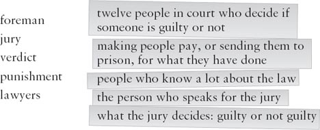
7 Read Scene 4 (Alternative 1). Complete these sentences. (use as many words as you like.)
1) The _____ asks the jury for their _____.
2) The _____ finds Simon and Dan _____.
3) The judge sends Simon and Dan __________.
4) Dan is _____ with Simon.
5) Mrs Jones says thank you to __________.
8 Read Scene 4 (Alternative 2), then answer these questions.
1) The verdict is 'not guilty'. Why, do you think?
2) How do Simon and Dan feel when they hear the verdict?
3) How does Mrs Jones feel?
4) What is going to happen to Jim?
5) Why does the judge say 'sorry' to Mrs Jones?
ACTIVITIES: After Reading
ACTIVITIES
After Reading
1 Match these people with the sentences. Then choose the best ending for each sentence, and complete it with the correct linking word.
Mary / Mrs Symes / Simon / Jim / Mrs Jones
1) _____ phoned the police...
2) _____ and his friend took a car...
3) _____ started to walk home from the disco...
4) _____ is angry with Simon and Dan...
5) _____'s spanner wasn't very good...
and / because / but / so / when
6) _____ drove it to Trenton.
7) _____ she thinks they killed her daughter.
8) _____ she bought a new one.
9) _____ he found Mary's body on the beach.
10) _____ she never arrived at her house.
2 What did Jim say to Mary before she left the disco (see SCENE 2)? Put their conversation in the right order, and write in the speakers' names. Jim speaks first (number 6).
1) _____ 'What? Are you going to hit me, just like you hit Simon? I've had enough of you. I'm going!'
2) _____ 'You know what I mean. I saw you dancing with those two boys!'
3) _____ 'Come here! Where are you going?'
4) _____ 'Haha! You always think about yourself, don't you!'
5) _____ 'What's wrong with that? I can dance with other boys if I want to!'
6) _____ 'You must never do that again! Do you understand?'
7) _____ 'No, you can't! You're my girl. You're with me, not them.'
8) _____ 'I'm going home. I want to be alone. I don't want to be with you any more!'
9) _____ 'What do you mean? I haven't done anything wrong!'
10) _____ 'Don't laugh at me! If you laugh at me again, I'm going to...'
3 Write a short review of the play. Use these words to help you.
I like / don't like this play because __________ .
It is a good play because __________ .
My favourite character is _____ because __________ .
I prefer ending 1 / 2 because __________ .
4 Find fifteen words from the play hidden in this word search, and draw lines through them. The words go from left to right, and from top to bottom.
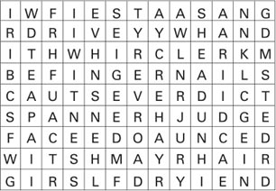
Put the words into these three groups:
Courtroom: judge, _____ _____ _____ _____
Cars: tyre, _____ _____ _____ _____
Parts of the body: face, _____ _____ _____ _____
5 Look at the word search again and write down all the letters that don't have a line through them. Begin with the first line and go across each line to the end. Can you find a sentence of eleven words?
1) What is the sentence?
2) Who said it?
3) Who is the speaker talking about?
6 A week after the trial, Mrs Symes is talking to a friend about the case. Fill in the gaps with these words from the play.
blood, court, drove, found, killed, morning, questions, remember , sand, sell, stole
'I was in _____ last week! Someone _____ my car - do you remember? Well, the police _____ it. Two boys took it and _____ it to Trenton. Later, at two o'clock in the _____, a police car stopped them. There was a lot of _____ in the car. My old spanner was in the car, too - and there was _____ on it! Somebody _____ poor Mary Jones with it! In court, they asked me a lot of _____ about the spanner, but I couldn't _____ very much. I don't want to use the car again. I'm going to _____ it and buy a new one!'
7 How did Mary Jones die? These are two possible explanations. Which one do you think is true? Why?
1) Simon and Dan left the disco and followed Mary in the Fiesta. They were angry with her. One of the boys took the spanner from the back of the car and hit her with it. Then they drove away.
2) While Simon and Dan were still in the disco, Jim went into the car park. He took the spanner from the Fiesta. He ran after Mary and killed her with it. Then he came back to the car park, put the spanner in the Fiesta, and drove to the beach in his Polo.
封底
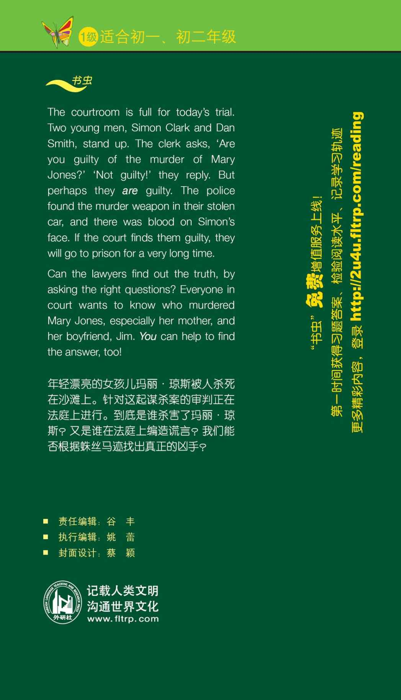